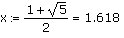
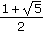
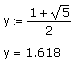
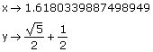

Equal Sign for Definition |
Keystroke: [:]
x := b
Evaluates b and assigns the result to x. If x is not a valid variable or function name, or suffers from other syntax problems, you see an appropriate error message. If b cannot be evaluated, you see an appropriate error message.
| Using the Equal Sign for Definition With the Equal Sign for Evaluation |
You can use the equal sign for definition with the equal sign for evaluation in a single line. For example,

This defines x by the result on the right-hand side.
x = 1.618
For the purposes of numerical evaluation, this is the same as defining a variable by the expression  itself.

However, you get differing results if you evaluate x and y with the symbolic equal sign (→).

Defining x by the result of the numerical evaluation is useful if you want x to evaluate symbolically to a floating-point number, rather than a symbolic expression.